Qoomlee Airline System
A modular airline booking platform — 2 Go services, a Next.js frontend, and 2 PostgreSQL databases. Search flights, book seats, pay via Omise, and get a boarding pass.
Core service — flight search (public), flight detail, booking CRUD, booking status updates. Session auth, internal token guard, structured logging, correlation IDs, security headers. 6 endpoints + 2 health checks.
Payment service — card charges via Omise, payment receipt lookup. Rate-limited at 10 req/s. Inter-service calls to qoomlee-service for booking validation and status update. 2 endpoints + 2 health checks.
Flight search, results, booking form, payment page, my bookings, check-in, boarding passes, login, profile, support. Server-side rendered. 12 screens implemented (of 38 planned).
Two isolated PostgreSQL instances — qoomlee (flights, routes, passengers, bookings, checkins, boarding_passes) and payment (payments). Both services: structured JSON logging, correlation IDs, graceful shutdown, health checks.
User Journey
Key Design Decisions
| Decision | Implementation |
|---|---|
| Monolith-friendly modularity | 2 services, not 8. Each owns its domain end-to-end. |
| Layered architecture | Handler → Service → Repository with interface-driven testability. |
| Lazy booking expiry | PENDING bookings expire on read — no background sweeper needed. |
| Overbooking prevention | SELECT FOR UPDATE locks seat rows under concurrent requests. |
| Duplicate booking guard | bookingToken UUID — same token, same result (idempotency). |
| Session auth | Opaque Bearer tokens (JWT RS256 upgrade planned). |
| Service-to-service auth | X-Internal-Token with constant-time comparison. |
| Payment idempotency | One charge per bookingRef — duplicate attempts return existing receipt. |
| Payment → Booking coupling | If PUT status fails after successful charge, logs and returns 201 anyway. |
Quick Start
Documentation Map
- CHALLENGE.md — All 50+ user stories
- ROADMAP.md — Feature status & priorities
- 02-architecture/ — C4 diagrams, API ref, architecture overview
- API_SPECS.md — Full API contract with examples
- SCORECARD.md — 100-point scoring rubric
- flight-search-review.md — Code review (33 findings)
- stitch_ui_prompt.md — 38-screen UI design spec
- reference/ — Aspirational docs (future architecture)
- TDG.md — Test-Driven Development config
- diagrams/ — Sequence & use case D2 diagrams
Architecture
C4 model diagrams at three levels of detail. Click the tabs to switch views.



Service Details
qoomlee-service (Go + Gin, :9988)
| Component | Responsibility |
|---|---|
| FlightHandler → FlightService → FlightRepo | Flight search (public), flight detail by ID |
| BookingHandler → BookingService → BookingRepo | Create booking (seat decrement, PNR), get by ref, list all, update status |
| Middleware: SessionAuth | Extract Bearer token → userSub in Gin context |
| Middleware: InternalToken | Validate X-Internal-Token for service-to-service calls |
| Middleware: SecurityHeaders | CORS, Cache-Control, X-Content-Type-Options, X-Frame-Options |
| Middleware: RequestID | Generate correlation ID per request |
payment-service (Go + Gin, :9984)
| Component | Responsibility |
|---|---|
| PaymentHandler → PaymentService → PaymentRepo | Charge card, get receipt |
| OmiseClient | Create charge via Omise API |
| BookingClient | GET booking detail + PUT status update on qoomlee-service |
| Middleware: RateLimit | Token bucket — 10 req/s on charge endpoint |
| Middleware: SessionAuth | Same pattern as qoomlee-service |
Payment Data Flow
Booking Status Lifecycle
API Reference
All 7 endpoints across 2 services. See API_SPECS.md for full request/response examples.
qoomlee-service — port 9988
Public (no auth)
Authenticated (Bearer token)
Internal (X-Internal-Token)
payment-service — port 9984
Authenticated (Bearer token)
Auth Details
| Mechanism | How it works |
|---|---|
| Session token | Opaque Bearer token from Authorization header. Set as userSub in Gin context. No JWT verification (yet — QML-010 planned). |
| Internal token | Shared secret in X-Internal-Token header. Compared with crypto/subtle.ConstantTimeCompare to prevent timing attacks. |
| Public routes | /api/flights/search and health endpoints — no auth required. |
Response Format
Monetary Convention
All money is stored as BIGINT minor units (satang). 1 THB = 100 satang. 3,500 THB → stored as 350000. Every monetary field appears as a triple: *Minor (integer satang), currency, and * (string display value). Handlers compute int64 ÷ 100 to produce the display string. Never return or accept a JSON float for money.
Roadmap
Feature status and priorities. Last updated 2026-08-27.
Replace session token (opaque Bearer) with real JWT RS256 verification. golang-jwt/jwt/v5 already in dependencies. Swap session extraction for jwt.ParseWithClaims.
Port the ratelimit.go pattern from payment-service. Protect search and booking endpoints.
Wire "Complete Payment" button on booking detail page → /payment?ref=X. Reuse existing payment page.
Add email format validation in POST /api/bookings handler.
Cancel booking backend (seat release, status update), refund payment via Omise, cancel confirmation dialog in web UI.
Online check-in endpoint, check-in status, boarding pass, time window validation (24h–1h before departure).
Seat configuration per aircraft, inventory per flight, 8-min TTL locks, interactive seat map UI.
Email confirmations, SMS alerts, push notifications via Redis Streams.
Prometheus metrics, Grafana dashboards, Jaeger distributed tracing.
iOS (Swift/SwiftUI) and Android (Kotlin/Jetpack Compose).
PromptPay QR, bank transfer, payment method selection UI.
Travel insurance, special meals, mobility assistance, visa checker.
Flight Discovery
Booking
Payment
Booking Expiry & Status
Security & Observability
Web Frontend
Improvement Stories (from code review)
| Story | Area | Severity | What |
|---|---|---|---|
| QML-069 | Money | HIGH | Fix float64 in price formatting (use integer division) |
| QML-070 | UI | BUG | FlightCard shows status as cabin class label |
| QML-071 | Tests | HIGH | Mock argument verification in handler tests |
| QML-072 | Arch | MEDIUM | Move timezone conversion to service layer |
| QML-073 | Validation | LOW | Add IATA format + passengers bounds validation |
| QML-075 | Error | MEDIUM | Results page error handling (NaN, fragile reload) |
Dependency Graph
Onboarding
Everything a new team member needs to get productive. Pick your role.
Developer Onboarding
Get free Omise test keys at dashboard.omise.co → sign up → API Keys → Test keys.
4 containers: postgres-qoomlee (:5433), postgres-payment (:5434), qoomlee-service (:8082), payment-service (:8084)
Project Structure
Code Patterns
Handler (HTTP) → Service (business logic) → Repository (SQL). Interfaces defined for repos — enables mocking in unit tests. No SQL in handlers.
Every db.Query, Omise call, and HTTP call checks err != nil. Errors returned, never silently dropped. HTTP semantics: 201 create, 200 read, 404 not-found, 400 bad input, 402 decline, 409 conflict, 429 rate limit.
Conventions
| Convention | Rule |
|---|---|
| Commits | Conventional commits: feat:, fix:, refactor:, test:, chore: |
| Go naming | Idiomatic Go — no magic numbers, no debug fmt.Println, slog for logging |
| Config | All from os.Getenv() — no hardcoded DB DSN, Omise keys, or service URLs |
| Secrets | Never in source code — grep -rn "skey_test\|pkey_test" . must return zero results in .go files |
| Money | BIGINT minor units (satang). Triple: *Minor (int), currency, * (string display). Never float. |
| Tests | Co-located with source. Mocks via testify/mock interfaces. Integration tests use testcontainers-go. |
QA Engineer Onboarding
Testing Strategy
Go: testify + testify/mock. All DB and HTTP calls mocked. Co-located with source (*_test.go).
testcontainers-go spins up real PostgreSQL. Tagged with //go:build integration.
Run against live docker compose stack. Verify HTTP status codes, response shapes, auth behavior.
5 test files in app/web/e2e/. Full user journeys: search → book → pay.
Scripts in tests/k6/. Search: 50 VUs × 30s. Booking flow: 20 VUs × 60s.
132 tests across 15 test files. Components, hooks, utilities.
Test Commands Cheat Sheet
| What | Command |
|---|---|
| All unit tests (backend) | make test-unit |
| Single test | cd services/qoomlee && go test ./... -run TestSearchFlights -v |
| Integration tests | make test-integration |
| Coverage (Go) | cd services/qoomlee && go test ./... -cover |
| Frontend tests | cd app/web && bun run test |
| E2E tests | cd app/web && bun run test:e2e |
| Load tests | k6 run tests/k6/search.js |
| Go vet | go vet ./... (in each service) |
| No hardcoded secrets | grep -rn "skey_test\|pkey_test" . — zero results in .go files |
Scoring (100 points)
All 7 endpoints work end-to-end. 6 automated smoke tests (3 pts each = 18 pts) + 4 manual scenarios (2 pts each = 8 pts, capped at 7).
Unit tests (12 pts), integration tests (10 pts), contract tests (8 pts), K6 load tests (5 pts). Tests are specifications, not afterthoughts.
Layered architecture, interface-based repos, error propagation, HTTP semantics, no hardcoded config, payment traceability, readable Go.
Health checks (4 pts), rate limiting (6 pts), graceful shutdown (3 pts), structured logging (3 pts), security/auth (4 pts).
Key Test Scenarios
| Scenario | Expected |
|---|---|
| Search BKK→SIN on 2026-06-15 | 200, ≥1 flight in flights array |
| Search with missing origin | 400 MISSING_REQUIRED_FIELD |
| Create booking on valid flight | 201, 6-char bookingRef, bookingId is integer |
| Book sold-out flight (QM999) | 409 NO_SEATS_AVAILABLE |
| Concurrent bookings on 1-seat flight | Exactly 1 succeeds, 1 returns 409 |
| Charge with success card (4242…) | 201, providerChargeId non-empty, status=SUCCEEDED |
| Charge with decline card (4111…) | 402, failureCode present, booking still PENDING |
| Charge already-paid booking (SEED01) | 409 ALREADY_PAID |
| Charge with mismatched amount | 400 AMOUNT_MISMATCH |
| Rate limit exceeded | 429 RATE_LIMIT_EXCEEDED |
| Missing JWT on /api/* | 401 UNAUTHORIZED |
| Missing X-Internal-Token on PUT status | 403 FORBIDDEN |
| Health endpoints | /health/live=200 always, /health/ready=200 when DB up, 503 when DB down |
Business Analyst Onboarding
What is Qoomlee?
Qoomlee is an airline booking platform. The product mission: enable passengers to search flights, reserve seats, and pay securely — all in one digital journey. Zero phone calls, zero queues, instant booking confirmation.
Seamless airline booking from search to boarding pass. Southeast Asian tier-2 cities to Australian gateways.
Can structured AI skills dramatically accelerate delivery quality? Team A (agent + skills) vs Team B (agent only). Same codebase skeleton. Same 2-hour window. Measured on 4 quality pillars.
Production-grade system in 2 hours — complete with auth, rate limiting, structured logging, and end-to-end tests.
Passenger Journey
Feature Board — All Epics
QML-001 Search Flights — Public endpoint. Search by origin, destination, date, passengers. Returns matching flights.
QML-002 View Flight Details — Get complete flight info: route, times, duration, price, seats.
✅ QML-003 Create Booking — PNR generation, seat decrement with SELECT FOR UPDATE.
✅ QML-004 View Booking Details — Nested passenger + flight + payment info.
✅ QML-007 Prevent Overbooking — Concurrent booking serialization.
✅ QML-048 Prevent Duplicate Bookings — bookingToken UUID dedup pattern.
⬜ QML-013 Passenger Email Validation — Email format check.
⬜ QML-052 Cancel Booking — Seat release + refund trigger.
✅ QML-005 Pay for Booking — Omise charge, amount validation, CONFIRMED flip.
✅ QML-006 View Payment Receipt — Receipt with status, provider, charge ID.
✅ QML-008 Prevent Duplicate Payments — 409 ALREADY_PAID.
✅ QML-009 Handle Payment Failures — FAILED records, retry support.
⬜ QML-053 Refund on Cancellation — Full refund via Omise.
✅ QML-011 Internal Token Guard — Constant-time compare for service-to-service calls.
✅ QML-014 Correlation IDs — X-Request-ID on all requests.
✅ QML-015 Structured Logging — JSON slog output.
⚠️ QML-010 JWT Auth — Uses session tokens, JWT RS256 upgrade planned.
⚠️ QML-012 Rate Limiting — Done in payment-service only. qoomlee-service pending.
All 23 web stories are complete: search form (desktop + mobile), date picker, results, travelers selector, booking form, confirmation, my bookings, payment, check-in UI, boarding passes UI, login/register, profile, airport select, popular destinations, flight status, travel requirements, app navigation, payment countdown, expiry handling, real data integration.
⬜ QML-047 Pay from Booking Detail — Wire "Complete Payment" button.
⬜ QML-054 Cancel from Manage Trip — Cancel confirmation dialog.
⬜ QML-049 Online Check-in — POST /api/checkins with seat + baggage.
⬜ QML-050 View Check-in Status — GET /api/checkins/:ref.
⬜ QML-051 View Boarding Pass — GET /api/checkins/:ref/boarding-pass.
⬜ QML-055 Check-in Time Window — 24h before to 1h before departure.
Key Documents for BA
- CHALLENGE.md — All 50+ user stories with acceptance criteria
- ROADMAP.md — Prioritized short/medium/long term plan
- stitch_ui_prompt.md — 38-screen UI design spec
- SCORECARD.md — 100-point evaluation rubric
- flight-search-review.md — Code review findings
Project Documents
Every document in the project, organized by directory.
Root Level
- README.md — Project overview, quick start, structure
- CHALLENGE.md — What to build, user stories, implementation hints
- API_SPECS.md — Request/response contract for every endpoint
- SCORECARD.md — 100-point scoring rubric across 4 pillars
- TECHNOLOGY_STACK_SUMMARY.md — Stack reference, Go patterns, env vars
- TDG.md — Test-Driven Development config & commands
- DETAILS.md — UI details (date picker, autocomplete, timezone, currency)
- CLAUDE.md — Claude Code context-mode routing rules
- docs-browser.html — This page
- ONBOARDING.html — Developer onboarding guide (dark theme)
01-documentation/
- flight-search-review.md — Vertical slice code review: 33 findings, 12 improvement stories
- ROADMAP.md — Feature status by domain, prioritized roadmap, dependency graph
- stitch_ui_prompt.md — 38-screen UI design spec (aspirational; ~12 implemented)
02-architecture/
- README.md — Architecture overview: services, data stores, key concepts
- api/API_REFERENCE.md — All 7 endpoints with auth requirements
- c4/Qoomlee_C4_L1_Context.d2 — C4 Level 1: System Context (D2 source)
- c4/Qoomlee_C4_L2_Container.d2 — C4 Level 2: Container diagram (D2 source)
- c4/Qoomlee_C4_L3_Component.d2 — C4 Level 3: Component diagram (D2 source)
- docs-browser.html — Architecture-focused doc browser (original)
02-architecture/reference/ — aspirational, future architecture
- README.md — Explains this directory is future reference
- TECH_STACK_ONBOARDING.md — Full developer onboarding guide (aspirational)
- TECHNOLOGY_STACK_SUMMARY.md — Module-by-module tech stack (aspirational)
- Missing_Modules_Analysis.md — Gaps in aspirational architecture
- api/api_documentation.md — Full API spec for all planned services
- api/seat_api_spec.md — Seat service API spec
- modules/SEAT_MODULE.md — Seat module architecture (Kotlin/Spring Boot)
diagrams/
- sequence-happy-path.d2 — Happy path sequence diagram
- sequence-payment-failure.d2 — Payment failure sequence diagram
- use-case.d2 — Use case diagram
00-planning/
- README.md — Planning directory overview
- 01-project_tracking_board_detailed.md — Project tracking board
- 02-epic_stories_detailed.md — Epic stories breakdown
- 03-sprint_planning_detailed.md — Sprint planning
- 04-definition_of_done.md — Definition of done
- 05-mvp_checklist.md — MVP checklist
- 06-seat_module_epic_backlog.md — Seat module epic backlog
- 08-passenger-ux-backlog.md — Passenger UX backlog
- backlog_refinement.md — Backlog refinement
- backlog_refinement_operations.md — Operations backlog refinement
- sprint_zero_tasks.md — Sprint zero tasks